Every business has a first client. Mine was a young designer with a stack of sketchbooks and a vision far bigger than her years. Her name is Jecholiah Mortimer, and her brand is The Fariest Couture.
- BrandThe Fariest Couture
- Founder & CEOJecholiah D. Mortimer · “Ms. J”
- IncorporatedNovember 2010 · Opa-locka, Florida
- NonprofitSisters in Crisis, Inc. · December 2010
- The showJuly 9, 2011 · Joseph Caleb Auditorium, Miami
- Our work togetherSince 2011 · the first client of LaFaries Mortimer LLC
- WatchYouTube · @TheFariestCouture
It started on paper
Jecholiah — known today as Ms. J — has dreamed of being a fashion designer since she was seven years old. That is when she began to sketch. Her surviving sketchbooks go back to 2004, and she signs and dates her work — a habit that turns old notebook pages into a record of a designer finding her style. By September 2009, at seventeen, she was already signing her sketches “The Fariest” — more than a year before the company was incorporated.
She had a second passion, too: hair. Her adolescent years were hard, but she finished high school at sixteen through a correspondence course and enrolled right away in cosmetology at Miami Lakes Technical School. At seventeen she became a mother, and she took a year away from her studies to care for her son. When she returned, she felt an overwhelming desire to work on the fashions God was giving her. As she studied, the designs kept coming — so often and so fast that she would sketch for hours at a time. Her family took notice and decided to help her build her dream.
Building the business
In November 2010, Jecholiah incorporated her company in Florida, with herself as president and CEO. The legal name was filed as The Fariest Coutour, Inc.; the brand the public came to know is The Fariest Couture. I served alongside her as vice president.
Just eleven days later, on December 8, 2010, she founded a second organization: Sisters in Crisis, Inc., a Florida nonprofit created to help people who had experienced physical, mental, and sexual abuse in their recovery. Sisters in Crisis set out to provide counseling, shelter, and food for girls and women. In its first holiday season, it provided Thanksgiving baskets for more than fifty families, and toys and food for families in need at Christmas. From the very beginning, her fashion came with a purpose.
Why Sisters in Crisis
Sisters in Crisis came out of Jecholiah’s own life. During her adolescent years, she suffered sexual abuse. Because she felt she could not talk about it, the pain led her into bad turns and choices.
She does not want anyone else to carry that pain the way she did. Her goal is simple: to help others begin to heal and move forward with their lives. That conviction is why her runway closed with a Charity Couture scene — and why her first business and her first nonprofit were founded just eleven days apart.
From sketchbook to runway
In 2011, Jecholiah became the very first client of LaFaries Mortimer LLC, as we worked together on The Fariest Couture fashion show. On July 9, 2011, at 6 p.m., she took the stage at the Joseph Caleb Auditorium in Miami, a 960-seat venue — at just nineteen years old. She was supported by her family and her church family at Missionary Evangelist Center Outreach Ministries, under Apostle Johnny L. Kemp and Pastor Patty L. Kemp, her godparents.
The flyer billed it as Fashions by: Ms. J — a night of fashion and music, with special performances, to support Sisters in Crisis. The evening opened with a red carpet, was hosted by Supa Cindy and LS Spade, and was broadcast live online. Tickets were sold through MEC Ministries and Ticketmaster.
The surviving highlight film, by KURF Films, shows a full production: hosts, live music and dance, backstage interviews, and a runway organized into themed scenes.
Safari Couture
Neutrals, animal print, and black-and-white tailoring.
Men in Black
Men's suiting and all-black formalwear.
Curvy Couture
Purple satin-look gowns and black-and-white evening looks, presented on curvy models.
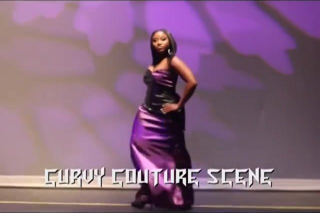
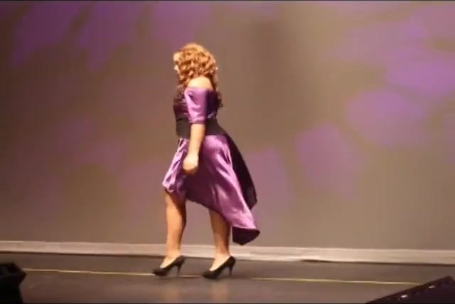
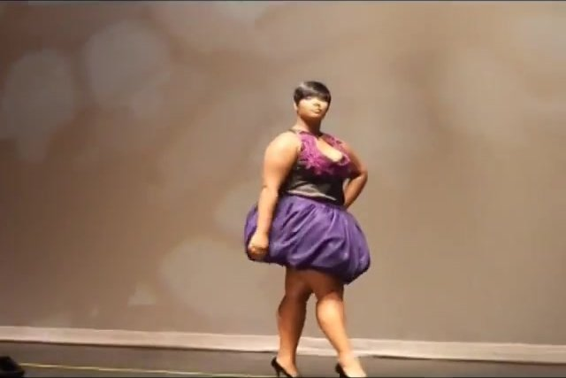
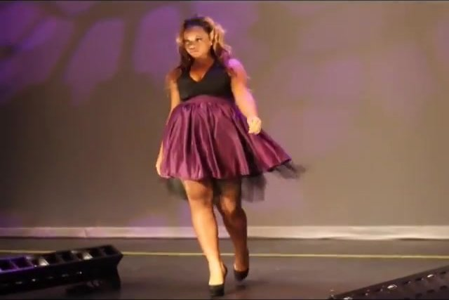
Haute Couture
Saturated red and fuchsia, with dramatic trains.
Charity Couture
A closing scene dedicated to Sisters in Crisis, Inc., followed by the finale.
Two things stand out to me, looking back. A dedicated Curvy Couture scene in 2011 put body-size inclusion on the runway by name. And the Charity Couture finale brought her nonprofit's mission onto the same stage as her designs. The work continued into 2012, with a model-casting session that June, new photo shoots, and another runway event that July.
April 2012 photo shoot
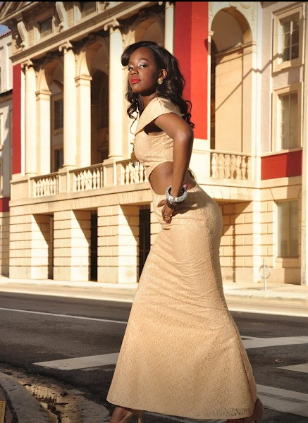
July 15, 2012
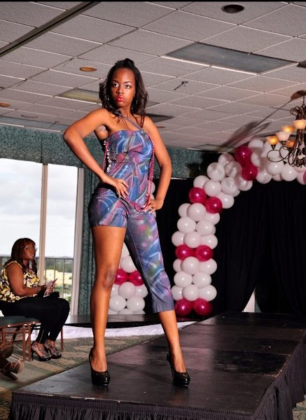
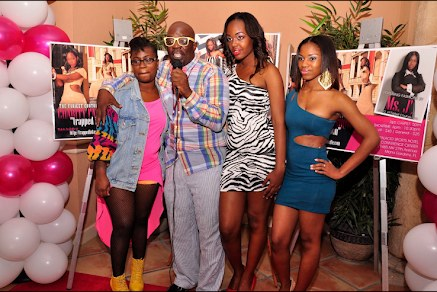
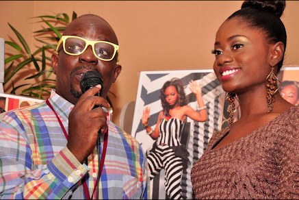
Behind the scenes
A show like this runs on details no one in the audience sees: the schedule, the lineup, the cues, the models ready on time. That was our role — working behind the scenes to make sure everything was on point, so Jecholiah's designs could have the spotlight.
Behind the scenes at The Fariest Couture fashion show, with LaFaries Mortimer LLC at work. Video: @TheFariestCouture on YouTube.
Every design holds a special place in her heart — from the fabric she picks to the last stitch.
Her message
In her own words, written as she prepared for that first show: “You’re going to fall, you’re going to make mistakes, but that’s expected. When you fall, don’t stay down, get back up, hold your head high, and keep pursuing your dreams. The only way you fail is if you don’t try.”
Why her story matters to me
First clients shape a business. Working on The Fariest Couture taught me what LaFaries Mortimer LLC still does today: take someone's gift and vision, and build the structure around it — the corporation, the nonprofit, the filings, the production — so the vision can be seen.
Jecholiah's story is a reminder to every creative entrepreneur: keep your sketches, and date them. Your earliest ideas are the beginning of your brand's history.
From her sketchbook
Where it all began. Her drawings range from a color-blocked mermaid gown in purple, orange, lime, and blue to pen studies of chevron lines, buckled corset waists, a leather zipper dress with a button neck, a half black, half white jumper, a halter gown with a sweeping back train, and a dress draped in strands of beads.
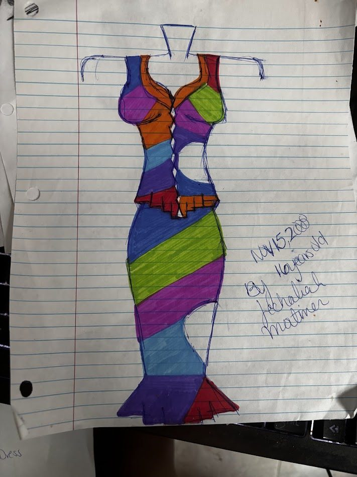
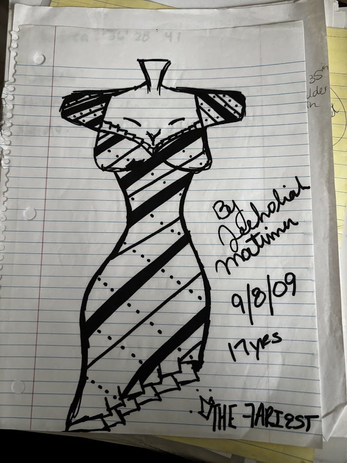
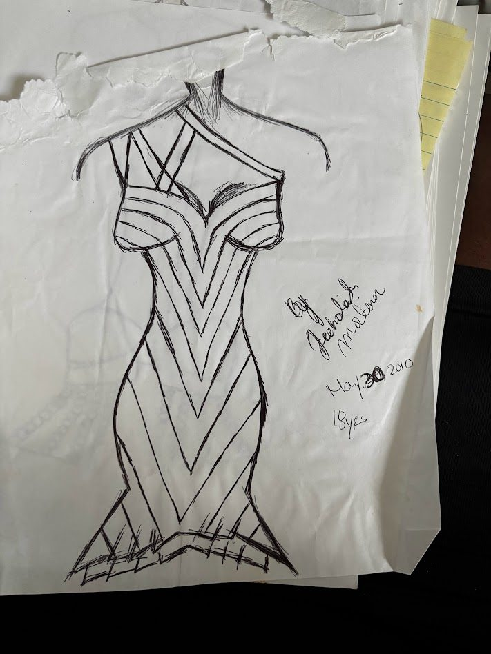
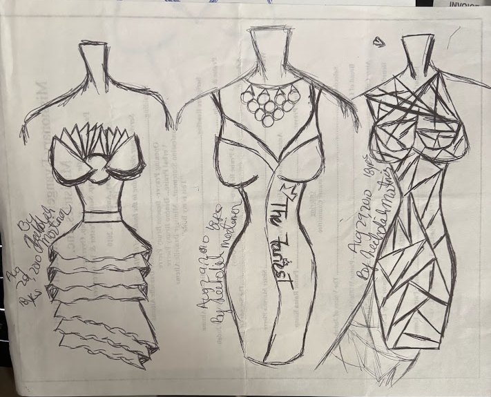
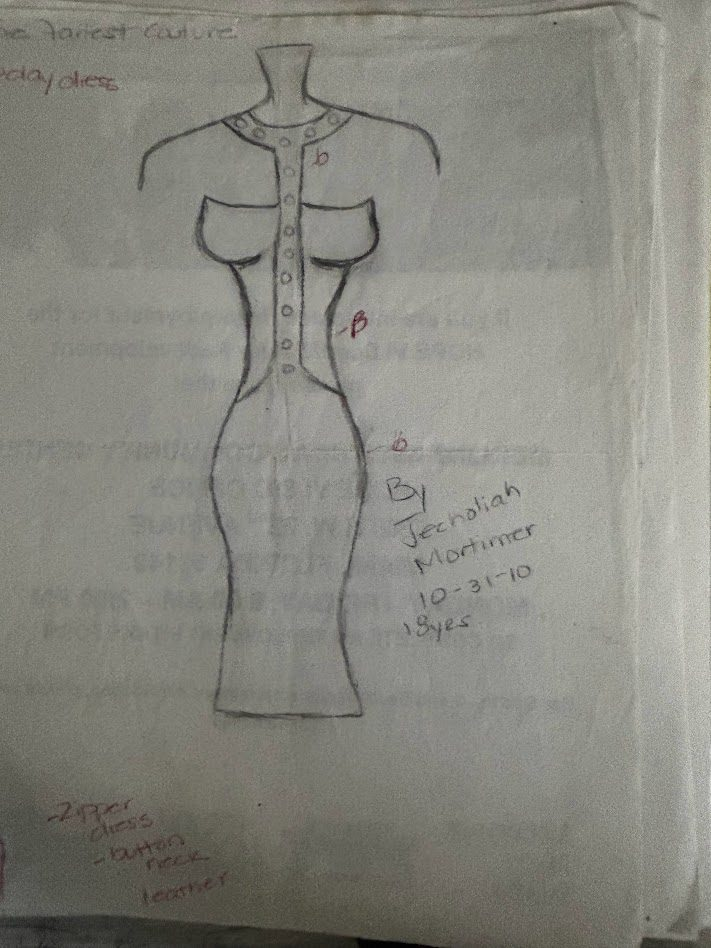
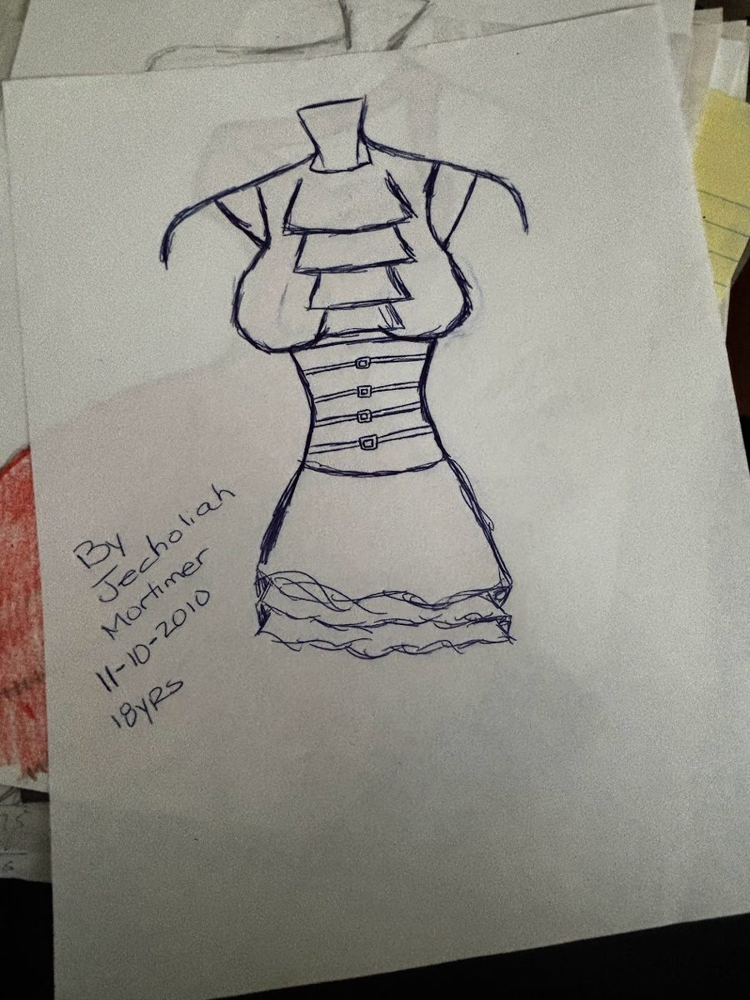
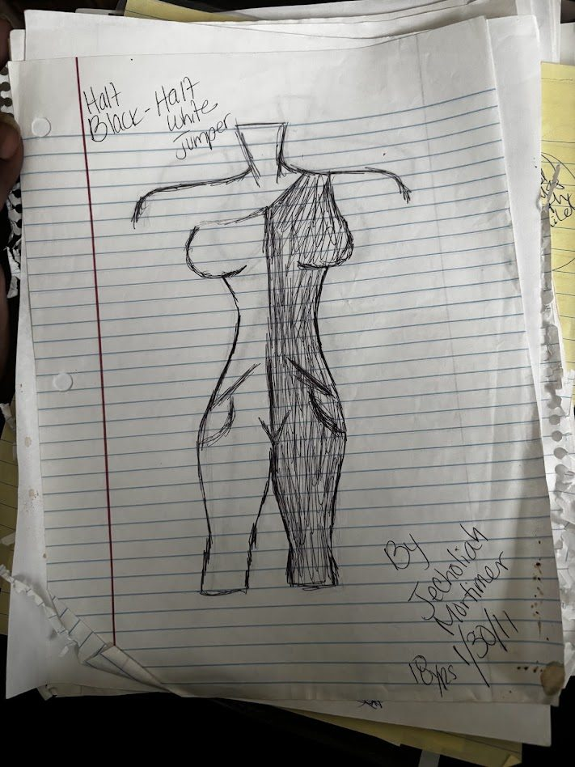
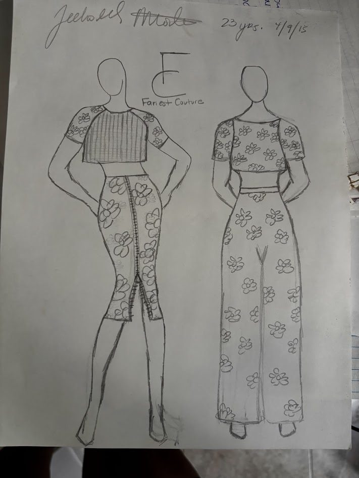
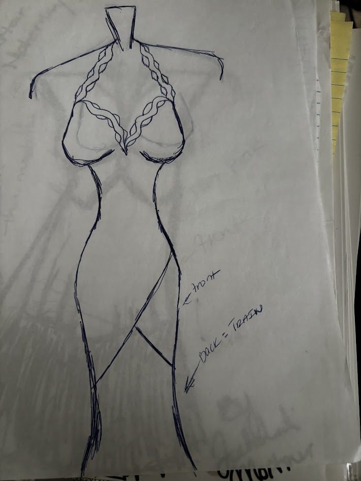
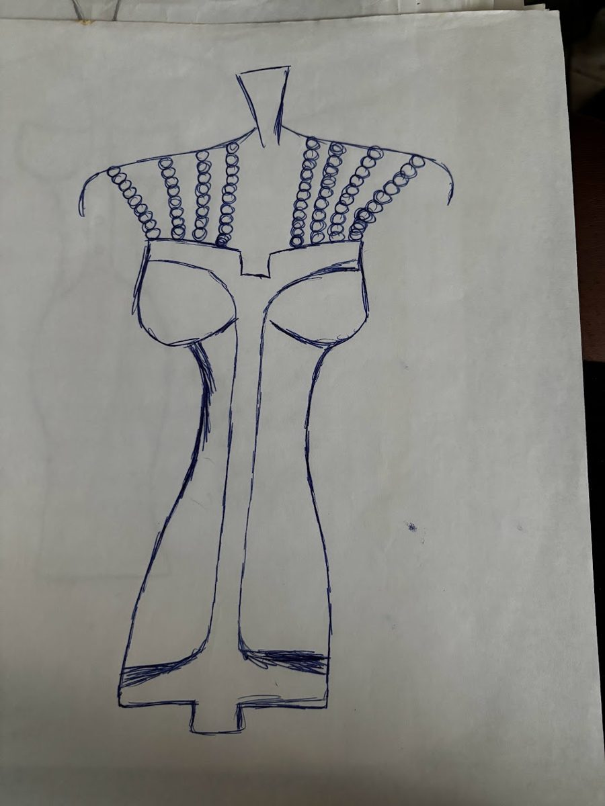
Watch The Fariest Couture on YouTube at @TheFariestCouture.